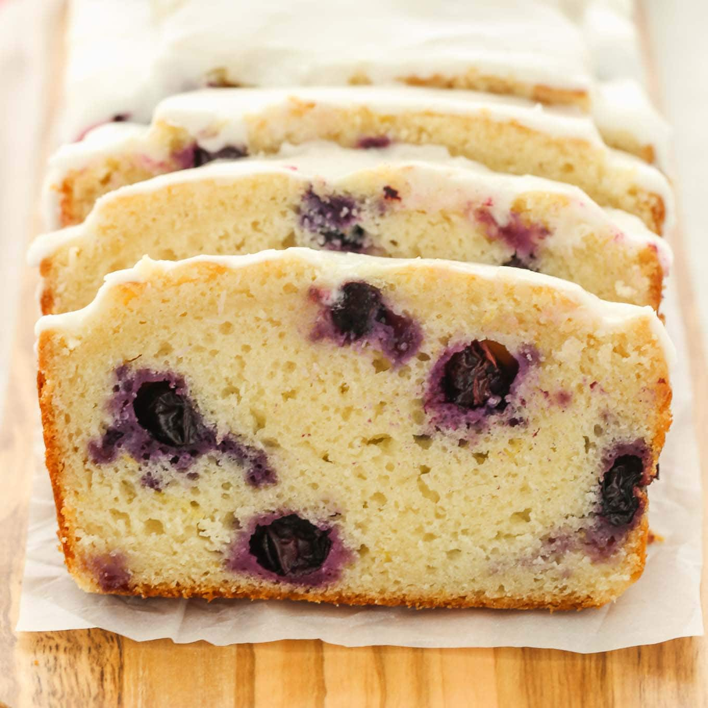

How to make Blueberry Lemon Loaf:

How to make a perfect batch of popcorn, with no burnt kernels! Easy stove-top popcorn recipe.
Butter
Popcorn Kernels
Salt
Heat up the butter in the pan
Put in the popcorn kernels
Shake the pan from time to time
Stop shaking when the kernels start popping
Add salt to taste
Enjoy